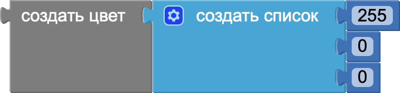
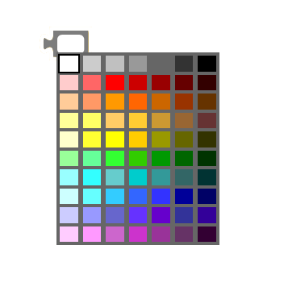

Блоки цветов в MIT App Inventor
Блоки цветов в MIT App Inventor позволяют управлять цветовым оформлением вашего приложения. С их помощью можно задавать цвета для различных компонентов, таких как фоны, кнопки, текст и другие элементы интерфейса. Эти блоки предоставляют стандартные предустановленные цвета, а также возможность создавать собственные цвета, используя значения RGB (красный, зелёный, синий).
- make color (создать цвет): Этот блок позволяет создать цвет, указав значения красного, зелёного и синего компонентов (RGB) в диапазоне от 0 до 255.
- split color (разделить цвет): Этот блок разбивает цвет на его компоненты RGB (красный, зелёный, синий) и возвращает их как список значений.
- basic color (базовый цвет): Этот блок представляет собой предопределённые цвета, такие как красный, зелёный, синий, чёрный, белый и другие, которые можно использовать в приложении.
Блоки 2-го уровня второго типа

Создать цвет (красный = значение,
зелёный = значение,
синий = значение)
зелёный = значение,
синий = значение)
Разделить цвет (цвет)
-– использовать компоненты для выполнения действия
-– использовать компоненты для выполнения действия
Блоки 3-го уровня

Базовый цвет (выбрать при нажатии левой кнопкой мыши)
-– применить для фона кнопки или текста
-– применить для фона кнопки или текста